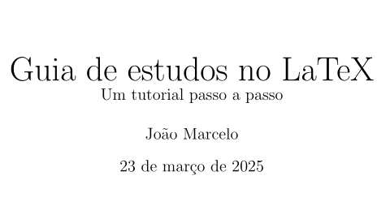
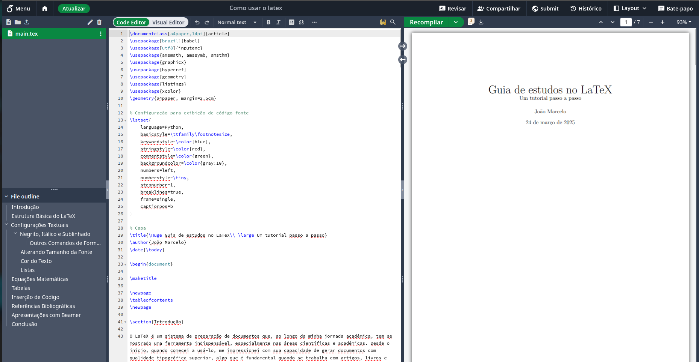

Basicamente é um software de edição de texto, muito utilizado para desenvolvimento de textos cientificos e matemáticos, no linux você pode usar o latex em qualquer editor de texto. Porém recentemente eu conheci o OverLeaf que é basicamente um lugar onde você pode escrever seu texto LaTex pelo source, e ir configurando pelo visual ou pelo propio codigo, deixando o processo bem tranquilinho.

Então basicamente o overleaf é uma plataforma de navegador, que permite que você crie projetos LaTex, seja ele BEAMER, REPORT, ARTICLE ou BOOK. que são formatações do propio LaTex. (calma que já já tudo vai fazer sentido) Se você já acompanha meu blog e se interessou pelo Quarto no rstudio, vai se interessar pelo OverLeaf também, basicamente tem uma estrutura bem parecida com um markdown, para montagem do projeto. Também temos o recompilar, que funciona mais ou menos como um render do Quarto, facilitando muito a montagem do codigo source, já que tem como você ir acompanhando as mudanças no documento, desde o inicio. O diferencial é a possibilidade de adição de pacotes, já que funciona tudo por meio de nuvém e você pode ter acesso a varias bibliotecas sem gastar memoria do seu computador. Isso é algo bem legal no OverLeaf.
Então vamos pra parte mais interessante e direto ao ponto, primeiramente construi um projeto no formato de apresentações beamer, basicamente foi um PDF sobre o assunto do post passado Outer Wilds e a astrobiologia por trás do jogo, vou deixar a apresentação beamer em link aqui, para quem tiver interesse em ver como fica esse formato, já que o guia de estudo, possui outra formatação.
Porém continuei estudando o LaTex por meio de cursos no youtube e outros conteudos disponiveis na internet, e resolvi montar um guia um pouco mais detalhado que vai servir pra me ajudar no desenvolvimento dos meus projetos, e pode ajudar quem se interessar pelo software. Acredito que muito dos meus amigos vão se interessar já que estamos inseridos nessa aréa cientifica e de produção textual.
Guia de estudos para produçao textual usando o LaTex
Basicamente foi um processo muito divertido aprender a usar o LaTex, principalmente pelas opções do OverLeaf e por ser bem didatico as ferramentas disponiveis. Também é um software bem poderoso pela sua utilidade na carreira acadêmica e tenho certeza que vou continuar usando bastante esse software até o final da minha graduação e em um possivel mestrado também com certeza. Do mais, gostei muito de produzir o documento GUIA para os estudos e espero que possa ser proveitoso para quem for usar também.